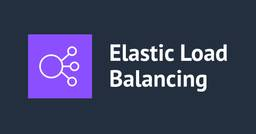
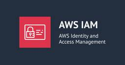

DevelopersIO
https://dev.classmethod.jp
DevelopersIOは、AWS、クラウド、生成AI、データ分析、アプリ開発などの技術情報から、DXやイベントレポート、SaaSやPython、Google Cloudなど多彩なトピックを紹介するクラスメソッドのオウンドメディアです。
フィード
AWS OrganizationsのRCPクォータが倍増したので、2,000件の上限を確認してみた
DevelopersIO
AWS Organizationsのリソースコントロールポリシー（RCP）の組織あたり上限が1,000から2,000に引き上げられました。テスト用Organizationで実際にRCPを2,000件作成し、新クォータの上限到達と2,001件目のエラーを確認しました。
37分前

Dynamic Table の SCHEDULER 属性が dbt-snowflake の scheduler config でネイティブ制御できるようになったので試してみた
DevelopersIO
dbt-snowflakeアダプタがDynamic Tableの`SCHEDULER`属性に正式対応したので、これまでのワークアラウンドから解放されるか実際に検証してみました。
3時間前

Amazon Quick と Snowflake をキーペア認証で接続してみた
DevelopersIO
Amazon Quick から Snowflake へキーペア認証で接続してみました。サービスユーザーの作成から接続、日本語での自然言語質問まで、実際の手順を紹介します。
3時間前
[新機能]dbt Projects on SnowflakeのSQL Environment Variablesで開発者ごとのスキーマ切り替えを試してみた
DevelopersIO
dbt Projects on SnowflakeのSQL Environment Variablesを使って、開発者ごとにスキーマを動的に切り替える方法を試してみました。`env.yml`で`CURRENT_USER()`を評価することで、煩雑だった`--vars`の手動設定が不要になります。
4時間前
【セッションレポート】球面調和関数の新展開: 回転・積分・勾配計算の最新技術 #CEDEC2026
DevelopersIO
CEDEC2026 のセッションレポートです。リアルタイムレンダリングで広く使われる球面調和関数について、その基礎と、回転・積分・勾配計算をめぐる最新の研究成果を、埼玉大学の岩崎 慶 氏が体系的に解説しました。
5時間前

2026年夏のローカルLLM事情を整理してみた
DevelopersIO
半年で大きく変わったローカルLLM事情を、実測データを交えて整理し直します。MoE + 4bit量子化が主流化し、投機デコードが実用段階に。汎用なら Qwen3.6-35B-A3B、ハード選びも128GB統合メモリ機が台頭。モデル・ハードウェア・ツールの2026年夏版選び方ガイドです。
6時間前
【Amazon Connect Customer】オペレーション時間をカレンダーとして AWS Lambda で配送可能日を判定させてみた
DevelopersIO
Amazon Connect Customer のオペレーション時間と AWS Lambda を活用して、配送可能日を自動判定する仕組みを実装してみました。顧客からの入力日付に対して営業日判定を行い、適切な処理分岐を行う方法について紹介します。
6時間前
【セッションレポート】多人数不完全情報ゲームAIのための数理最適化と機械学習 #CEDEC2026
DevelopersIO
CEDEC2026 のセッションレポートです。ポーカーや麻雀のように相手の情報が見えない不完全情報ゲームで、どんな相手にも崩れない強い AI をどう作るのか。ナッシュ均衡という考え方と、その学習方法をサイバーエージェントの研究者が解説しました。
7時間前
S3 TablesのIcebergテーブルをGoから直接操作し、OpenTelemetryで内部を可視化してみた
DevelopersIO
GoのプログラムからS3 TablesのIcebergテーブルを直接操作し、OpenTelemetryのトレースで内部動作を可視化してみました。Copy-on-Writeの実態やファイル読み飛ばしの仕組みが、トレースでどう見えるかをお見せします。
8時間前

[アップデート] AWS HealthOmics が東京リージョンに来ました
DevelopersIO
AWS HealthOmics のプライベートワークフローが東京リージョンで利用可能になりました。ゲノムデータを国内に留めたまま解析できるようになった意義と、実際の動作確認について紹介します。
9時間前

CloudWatch Logsに統合されたログ記録、NLBでも試してみた
DevelopersIO
ALBのCloudWatch Logs配信を検証した際、NLBアクセスログも同じVended Logsの仕組みでCloudWatch Logsへ直接配信できることを発見しました。実際にNLBで設定し、JSON形式のログ取得とフィールド構成の確認、配信タイムラグの実測まで試してみました。
9時間前
実機なしで CAN → Greengrass → IoT Core の検証環境を作った
DevelopersIO
FleetWise の新規受付終了に伴い、EC2 + vcan で CAN データを自作 Greengrass コンポーネント経由で IoT Core に MQTT publish する検証環境を構築しました。コンポーネントの実装とレシピの書き方、デプロイ時の注意点を紹介します。
9時間前
【セッションレポート】『Relink』を拡張せよ - 『GRANBLUE FANTASY: Relink - Endless Ragnarok』の開発速度と品質を守るCI運用 #CEDEC2026
DevelopersIO
CEDEC2026 のセッションレポートです。『GRANBLUE FANTASY: Relink - Endless Ragnarok』の開発で、増え続ける物量に対して開発速度と品質を守った Cygames の CI 運用を、Datadog による可視化、静的解析、画像比較自動テストの 3 つの取り組みから紹介します。
10時間前
【セッションレポート】テスト自動化環境の運用で見えた課題と、再設計による解決事例 ～テスト回数、端末台数、テスト内容、プラットフォームのスケールアップ事例～ #CEDEC2026
DevelopersIO
CEDEC2026 のセッションレポートです。長期運営中の Unity 製対戦アクションゲームを対象に、テスト自動化環境を運用しながら再設計し、テスト回数や端末台数などをスケールさせてきたセガの事例を紹介します。
11時間前
使うほど賢くなるデータ活用サービス「kaimei」で、AIを育てながら自然言語分析する
DevelopersIO
データ活用の課題を解決するクラスメソッドのサービス「kaimei」を紹介します。日本語で質問するだけでSQLやグラフ作成、データ解釈までを自動で完結。使うほどAIが育ち、社内特化の分析基盤へと成長する仕組みをご紹介します。
11時間前
AWS Batch で MultiQC を実行して RNA-seq の QC レポートをまとめてみた
DevelopersIO
RNA-seq 解析の品質管理を効率化する方法を紹介します。AWS Batch を用いて複数の FASTQ ファイルを FastQC で品質チェックし、MultiQC で結果を 1 つのレポートに集約する方法をご紹介します。
12時間前
Amazon Connect Customer AIエージェントでデータテーブルから問い合わせ種別を取得してフロー分岐してみた
DevelopersIO
Amazon Connect Customer AIエージェントで会話内容を問い合わせ種別に分類し、後続フローで活用する方法を紹介します。データテーブルで管理する問い合わせ種別候補をフローモジュールツールで取得し、カスタムReturn to Controlツールで分類結果を問い合わせフローへ渡す構成を試しました。
12時間前
ALBの新機能、CloudWatch Logsに統合されたログ記録を試してみた 3
3
DevelopersIO
ALBのログ配信設定としてCloudWatch Logsへの直接配信が可能になりました。Vended Logs APIでの設定手順、JSON・CSV・レガシー互換の3フォーマット比較、配信タイムラグの実測結果をまとめます。
13時間前
【Amazon Connect Customer】入力してもらった電話番号の登録有無を AWS Lambda で判定して処理を分岐してみた
DevelopersIO
Amazon Connect Customer で顧客から入力された電話番号の登録有無を AWS Lambda で判定し、処理を分岐させる方法を実装してみました。サンプルコードと実行結果をもとに、その流れをご紹介します。
13時間前
【セッションレポート】世界に普及可能なコンピュータやネットワーク技術の生産手段の確立 #CEDEC2026
DevelopersIO
CEDEC2026 の基調講演のレポートです。SoftEther VPN やシン・テレワークシステムの開発で知られる登 大遊 氏が、日本がデジタル基盤技術の生産手段をどう確立すべきかについて論じました。その課題認識と解決の方向性を紹介します。
14時間前

【非エンジニアのためのClaude/ClaudeCodeシリーズ】 Cloude Designを使ってみた
DevelopersIO
# ExcerptClaudeに新しく追加された「Design」機能を使って、実際にイベント案内資料を作成してみました。テンプレートから設問への回答だけで簡単に資料を作れる便利さをご紹介します。
14時間前
Discord と Google API で予定・タスク・家計簿を一元管理する自分専用 Bot を作ってみた
DevelopersIO
Google APIと連携して Discord で予定・タスク・支出を一元管理する Bot を作成しました。 Discord Bot の作成から Google API との連携、実装のポイントまでを解説しています。
14時間前
AzureのダブルチェックをClaudeで自動化できたのでGCPにも横展開したら、GUI目視に戻ってきた話
DevelopersIO
GCP版プロジェクト作成チェックの自動化に挑戦しましたが、quota projectやAPI有効化など予想外の壁にハマりました。結果として「少件数の日常運用ではGUI目視の方が速い」という判断に至った経験を、ハマりどころと共にお話しします。
14時間前

[アップデート] Amazon Bedrock AgentCore のトレーススパンがエージェントごとの CloudWatch ロググループに統合されるようになったので試してみた
DevelopersIO
Amazon Bedrock AgentCore のトレーススパンが単一のロググループに統合されるアップデートが発表されました！
14時間前

AsyncGeneratorでイベントストリーミングパイプラインを構築する — コールバック地獄からの脱却
DevelopersIO
コールバックやEventEmitterに代わるアプローチとして、TypeScriptのAsyncGeneratorを使ったイベントストリーミングパイプラインの設計パターンを紹介します。yield*による委譲、バックプレッシャー、Strategyパターンとの組み合わせなど、実践的な実装例を解説します。
15時間前
axios-fluentで型安全なHTTPクライアントをメソッドチェーンで構築する
DevelopersIO
axios-fluent を使って、メソッドチェーンで型安全なHTTPクライアントを構築する方法を紹介します。イミュータブルな設計や .data() / .ok() 等の便利メソッド、AxonError によるエラーハンドリングなど、実践的な使い方をコード例とともに解説します。
16時間前

IAM 権限を絞る前に「実際にどの API を使っているか」を CloudTrail・Access Analyzer で調べてみた
DevelopersIO
IAM ポリシーを最小権限に絞る際、実際に使われているアクションを把握しないまま削除してしまうことはありませんか？今回は CloudTrail、IAM Access Analyzer、最終アクセス情報を使って、ロールが実際に呼んでいる API を調べる方法を SES を例に試してみました。
17時間前
非エンジニアがClaudeを使って、Google Cloudプロジェクト作成をGASで半自動化してみた
DevelopersIO
Google Cloudプロジェクト作成の手作業をGoogle Apps Scriptで半自動化してみました。コンソール操作のミスを防ぎ、作業効率を上げるために、スプレッドシートから`gcloud`コマンドを自動生成する仕組みを構築した経験をお話しします。
17時間前
Claude CodeのGCPアーキテクチャ図スキルを改善する — 座標検証の自動化とデザインパターンの発見
DevelopersIO
Claude CodeのGCPアーキテクチャ図生成スキルに、座標検証の自動化（Python）、Draw.ioのz-order問題の回避、インラインエッジラベル、レイアウトの論理的グルーピングといった改善を加え、SKILL.mdにフィードバックする実践的な改善サイクルを紹介します。
17時間前
【登壇レポート】 100名で参加のクラスメソッドが教えるAWS re:Inventへ行くべき理由と効果的な参加術で「はじめてのre:Inventを120%充実させよう！」というタイトルで登壇しました
DevelopersIO
2026年7月10日（金）に開催された「100名で参加のクラスメソッドが教えるAWS re:Inventへ行くべき理由と効果的な参加術」というウェビナーで登壇時に使用した資料を公開します！
17時間前